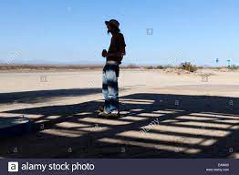

My superhero isn't very special as heros come. He doesnt have super speed, or strengh, or inteligence, but what he does have in the uncanny ability to find shade to stand in to cool off on a hot day. That's how he got his name, always helping people find shade on the hottest days of work. Furthermore, his biggest weakness is hot, high humidity days with no wind. This is because it makes the shade feel almost useless.
